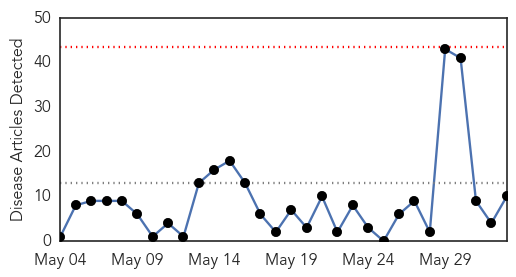
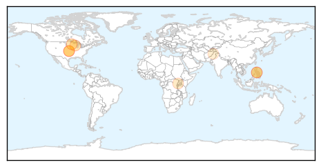
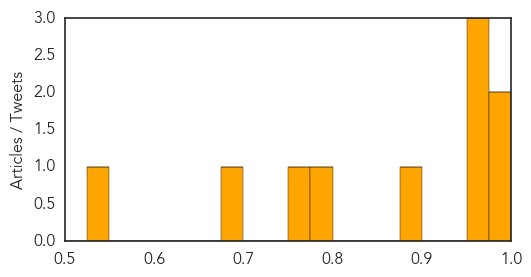
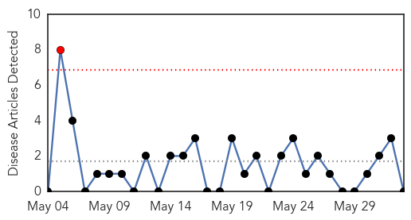

Measles
30-Day Web Trend
0 alerts, 0 warnings

30-Day Twitter Trend
0 alerts, 0 warnings

Article Locations
Article Confidences
Top Articles:
- 0.993
- Ohio measles outbreak a ‘wake-up call’
- 0.990
- Measles Exposure at Seattle Airport
- 0.975
- Seattle Airport Warns of Measles Exposure
- 0.974
- Seattle Airport Warns Of Measles Exposure
- 0.958
- Measles: A deadly disease not yet vanquished
- 0.899
- Measles at record level elsewhere in state — not on Peninsula -- Port Angeles Port Townsend Sequim Forks Jefferson County Clallam County Olympic Peninsula Daily news
- 0.799
- Child with measles visited Sea-Tac in late May
- 0.752
- Measles cases at 20 year high
- 0.686
- Uganda: Measles Outbreak DREF operation n° MDRUG035 Preliminary Final Report - Uganda
- 0.538
- 7 Children Died After Measles Vaccination in Pakistan
Top Tweets:
-
No tweets found for Jun 02, 2014
Pertussis
30-Day Web Trend
1 alerts, 0 warnings

30-Day Twitter Trend
0 alerts, 0 warnings

Article Locations

Article Confidences

Top Articles:
-
No articles found for Jun 02, 2014
Top Tweets:
-
No tweets found for Jun 02, 2014